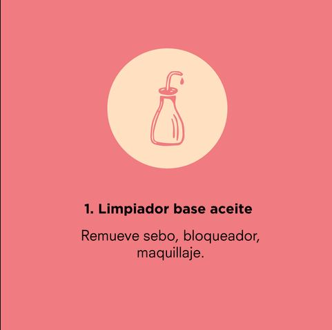
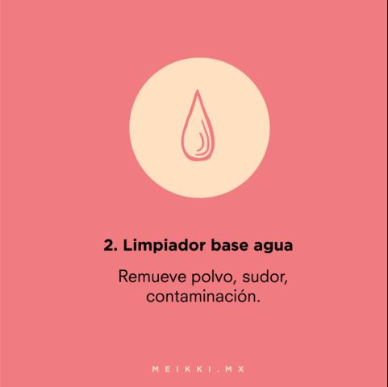
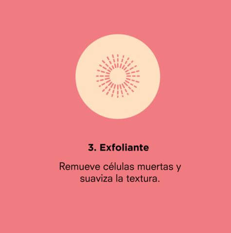
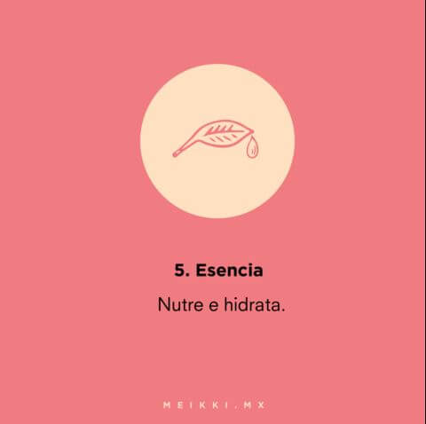

Limpiador a base de aceite

El limpiador base aceite se encarga de remover impurezas base aceite. Así como el agua y el aceite no se mezclan, si sólo usas un limpiador base agua no estás removiendo efectivamente suciedades aceitosas, como el sebo que produce tu cara, el maquillaje (normal o a prueba de agua) o el protector solar. Y antes de que digas que no, SÍ. Necesitas limpiar tu rostro MAÑANA Y NOCHE. Mientras duermes, tu piel suda y produce sebo y aceite. Necesitas removerlo con un jabón base aceite cada mañana para asegurarte de que empiezas tu día libre de mugre aceitosa, sobre todo antes de que vayas a ponerle más cosas encima como maquillaje o protector solar. Si no, estarás poniéndote toda tu rutina de día (esencia, sueros, ampoules, crema, protector solar y maquillaje) encima de toda esa mugre y sebo. Es una receta perfecta para congestionar tus poros y crear imperfecciones como espinillas y puntos negros. Mejor prevenir y lavar tu carita mañana y noche.
Limpiador a base de aceite

El limpiador base agua se encarga de remover todas las impurezas que no alcanzaste a remover con el aceite limpiador: las impurezas base agua como polvo, contaminación y sudor. Con este paso te aseguras de limpiar tu rostro y dejarlo libre de todo tipo de impurezas sin remover aceites esenciales de tu piel ni dañar tu cara
Exfoliante

La exfoliación es un paso súper importante en las rutinas de belleza. Se encarga de limpiar profundamente los poros, remover células muertas de la piel y eliminar mugre y polvo. Cuando eliminas estos contaminantes, evitas que tus poros se congestionen y se conviertan en puntos negros o granitos. Y al remover células muertas de la piel, obtendrás una complexión más iluminada, lisa y limpia, ya que la piel debajo es nueva y suave. Y por si fuera poco, al remover esta capa de piel muerta y mugre, ayudas a que tus productos de belleza penetren mejor, volviéndolos más efectivos. La misma no se realiza todos los dias ya que puede lastimar tu piel
Tonico

Después de realizar tu doble limpieza y (si te tocaba ese día) exfoliar tu piel, estás lista para comenzar a hidratar. Tu piel tiene una acidez natural que la protege, también llamada barrera de protección, la cual puede verse afectada después de limpiarla. Los tónicos se encargan de rebalancear el pH de tu piel y devolverle su acidez natural. También, ayudan a que te asegures que removiste completamente toda la suciedad y grasa de tu rostro, limpiando aquellos puntos que tus limpiadores faciales no cubrieron por completo. Están diseñados para que tu piel acepte y absorba los sueros, esencias, mascarillas y cremas hidratantes mucho más profundamente.
Esencia

Aunque son parecidos, las esencias y los tónicos no son lo mismo. Los tónicos balancean el pH de la piel y la preparan para la hidratación que sigue, la cual comienza con la esencia. Una esencia es como el mediador entre tu tónico y un tratamiento más concentrado, como un suero o un ampoule. No son tan ligeros ni acuosos como un tónico, pero tampoco tienen una consistencia tan espesa como un suero o un ampoule.